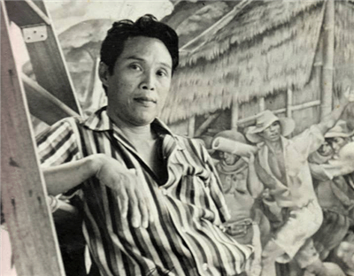
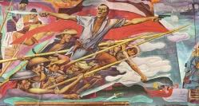
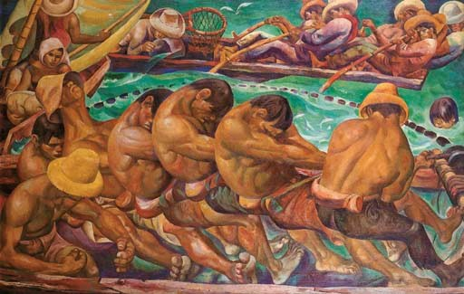
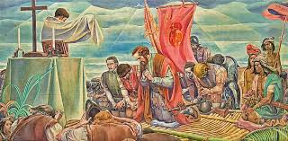

Fernando Amorsolo
1892 - 1972 • National Artist for Visual Arts
Fernando Amorsolo
Nicknamed the "Grand Old Man of Philippine Art," he was the first-ever to be recognized as a National Artist of the Philippines. Fernando Amorsolo Y. Cueto was a portraitist and painter of rural Philippine landscapes.
Fernando
Amorsolo

Dalagang Bukid
1928 • Oil on Canvas
Dalagang Bukid
"Dalagang Bukid" (Country Maiden) is one of Fernando Amorsolo's most iconic works, depicting a young

Planting Rice
1921 • Oil on Canvas
Planting Rice
"Planting Rice" is a depiction of the agricultural activities in the Philippines during the mid-20th century.

Florencia “Nena” Singson Gonzalez-Belo
1972 • Oil on Canvas
Unfinished Portrait of Florencia “Nena” Singson Gonzalez-Belo
The oil-on-canvas piece, featuring a fair-skinned lady in a pink top, remains unfinished from the chest down, revealing exposed underdrawings and grid marks.

Botong Francisco
1912 - 1969 • National Artist for Visual Arts
Botong Francisco
Also known as Carlos Modesto "Botong" Villaluz Francisco, was one of the first Filipino modernists who broke away from Fernando Amorsolo's romanticism of Philippine scenes.
Botong
Francisco

Filipino Struggles Through History
1968 • Oil on Canvas
Filipino Struggles Through History
Filipino Struggles Through History depicts key events from pre-colonial times, through Spanish and American colonial rule, to the Japanese occupation and post-war independence.

Magpupukot
1957 • Oil on Canvas
Magpupukot
Magpupukot portrays Filipino fishermen in a communal effort, highlighting themes of unity, labor, and the traditions of his hometown, Angono, Rizal.

The First Mass in Limasawa
1965 • Oil on Canvas
The First Mass in Limasawa
The First Mass in Limasawa depicts the first Catholic mass on March 31, 1521, on Limasawa Island, officiated by Fr. Pedro Valderrama, with Magellan, Pigafetta, and local chieftains present.
Blood Compact
1965 • Mural